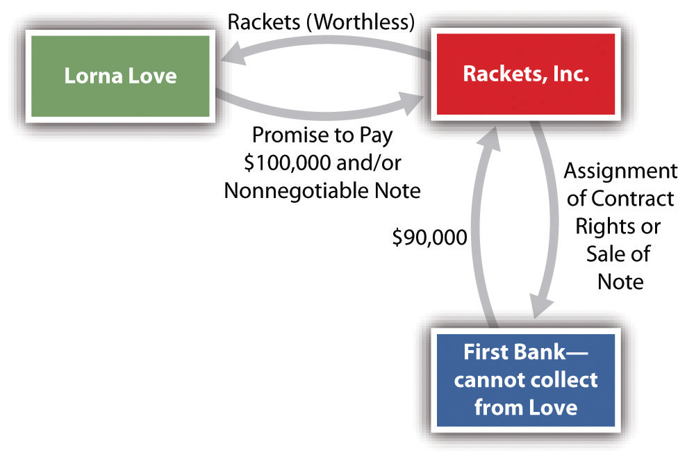
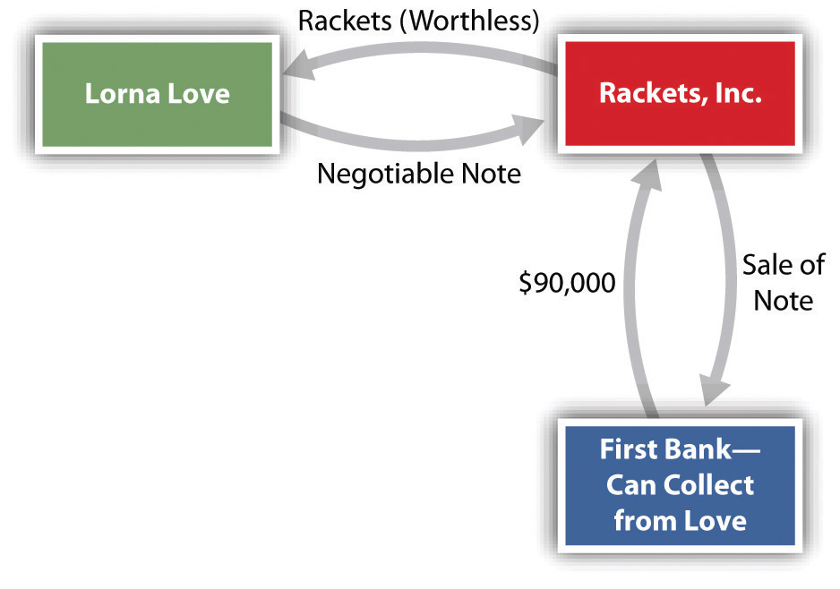

Because commercial paper is a vital invention for the working of our economic system, brief attention to its history and its function as a medium of exchange in economics and finance is appropriate.
Commercial paper is the collective term for various financial instruments, or tools, that include checks drawn on commercial banks, drafts (drawn on something other than a bank), certificates of deposit, and notes evidencing a promise to pay. Like money, commercial paper is a medium of exchange, but because it is one step removed from money, difficulties arise that require a series of interlocking rules to protect both sellers and buyers.
To understand the importance of commercial paper, consider the following example. It illustrates a distinction that is critical to the discussion in our four chapters on commercial paper.
Lorna Love runs a tennis club. She orders a truckload of new tennis rackets from Rackets, Inc., a manufacturer. The contract price of the rackets is $100,000. Rackets ships the rackets to Love. Rackets then sells for $90,000 its contract rights (rights to receive the payment from Love of $100,000) to First Bank (see Figure 22.1 "Assignment of Contract Rights"). Unfortunately, the rackets that arrive at Love’s are warped and thus commercially worthless. Rackets files for bankruptcy.
Figure 22.1 Assignment of Contract Rights
May the bank collect from Love $100,000, the value of the contract rights it purchased? No. Under the contract rule discussed in Chapter 14 "Third-Party Rights", an assignee—here, the bank—steps into the shoes of the assignor and takes the assigned rights subject to any defense of the obligor, Love. (Here, of course, Love’s defense against paying is that the rackets are worthless.) The result would be the same if Love had given Rackets a nonnegotiable note, which Rackets proceeded to sell to the bank. (By nonnegotiable we do not mean that the note cannot be sold but only that certain legal requirements, discussed in Section 22.3 "Requirements for Negotiability" of this chapter, have not been met.)
Now let us add one fact: In addition to signing a contract, Love gives Rackets a negotiable note in exchange for the rackets, and Rackets sells the note to the bank. By adding that the note is negotiable, the result changes significantly. Because the note is negotiable and because the bank, we assume, bought the note in good faith (i.e., unaware that the rackets were warped), the bank will recover the $100,000 (see Figure 22.2 "Sale of Negotiable Note").
Figure 22.2 Sale of Negotiable Note
The key to the central role that commercial paper plays in modern finance is negotiabilityTransferable from one person to another by delivery or by delivery and indorsement.. Negotiability means that the paper is freely and unconditionally transferable from one person to another by delivery or by delivery and indorsement. (“Indorsement,” not “endorsement,” is the spelling used in the UCC, though the latter is more common in nonlegal usage.) Without the ability to pay and finance through commercial paper, the business world would be paralyzed. At bottom, negotiability is the means by which a person is empowered to transfer to another more than what the transferor himself possesses. In essence, this is the power to convey to a transferee the right in turn to convey clear title, when the original transferor does not have clear title.
In this chapter, we examine the history and nature of commercial paper and define the types of parties (persons who have an interest in the paper) and the types of instruments. We then proceed to four fundamental issues that must be addressed to determine whether parties such as First Bank, in the preceding example, can collect:
In most transactions, especially when the first three questions are answered affirmatively, the purchaser will have little trouble collecting. But when the purchaser is unable to collect, questions of liability arise. These questions, along with termination of liability, are discussed in Chapter 25 "Liability and Discharge".
Finally, in Chapter 26 "Legal Aspects of Banking" we examine other legal aspects of banking, including letters of credit and electronic funds transfer.
Negotiable instruments are no modern invention; we know that merchants used them as long ago as the age of Hammurabi, around 1700 BC. They fell into disuse after the collapse of the Roman Empire and then reappeared in Italy around the fourteenth century. They became more common as long-distance commerce spread. In an era before paper currency, payment in coins or bullion was awkward, especially for merchants who traveled great distances across national boundaries to attend the fairs at which most economic exchanges took place. Merchants and traders found it far more efficient to pay with paper.
Bills of exchange, today commonly known as drafts, were recognized instruments in the law merchant. (The “law merchant” was the system of rules and customs recognized and adopted by early-modern traders and is the basis of the UCC Article 3.) A draft is an unconditional order by one person (the drawer) directing another person (drawee or payor) to pay money to a named third person or to bearer; a check is the most familiar type of draft. The international merchant courts regularly enforced drafts and permitted them to be transferred to others by indorsement (the legal spelling of endorsement). By the beginning of the sixteenth century, the British common-law courts began to hear cases involving bills of exchange, but it took a half century before the courts became comfortable with them and accepted them as crucial to the growing economy.
Courts were also hesitant until the end of the seventeenth century about sanctioning a transferor’s assignment of a promissory note if it meant that the transferee would have better title than the transferor. One reason for the courts’ reluctance to sanction assignments stemmed from the law that permitted debtors to be jailed, a law that was not repealed until 1870. The buyer of goods might have been willing originally to give a promissory note because he knew that a particular seller would not attempt to jail him for default, but who could be sure that a transferee, probably a complete stranger, would be so charitable?
The inability to negotiate promissory notes prevented a banking system from fully developing. During the English Civil War in the seventeenth century, merchants began to deposit cash with the goldsmiths, who lent it out at interest and issued the depositors promissory notes, the forerunner of bank notes. But a judicial decision in 1703 declared that promissory notes were not negotiable, whether they were made payable to the order of a specific person or to the bearer. Parliament responded the following year with the Promissory Notes Act, which for the first time permitted an assignee to sue the note’s maker.
Thereafter the courts in both England and the United States began to shape the modern law of negotiable instruments. By the late nineteenth century, Parliament had codified the law of negotiable instruments in England. Codification came later in the United States. In 1896, the National Conference of Commissioners on Uniform State Laws proposed the Negotiable Instruments Act, which was adopted in all states by 1924. That law eventually was superseded by the adoption of Articles 3 and 4 of the Uniform Commercial Code (UCC), which we study in these chapters.
In 1990, the American Law Institute and the National Conference of Commissioners on Uniform State Laws approved revised Article 3, entitled “Negotiable Instruments,” and related amendments in Article 4. The revisions clarified and updated the law. All states except New York and North Carolina have adopted Articles 3 and 4.
State law governing commercial paper is vulnerable to federal preemption. This preemption could take two major forms. First, the Federal Reserve Board governs the activities of Federal Reserve Banks. As a result, Federal Reserve regulations provide important guidelines for the check collection process. Second, Article 3 of the UCC can be preempted by federal statutes. An important example is the Expedited Funds Availability Act, which became effective in 1988 (discussed in Chapter 26 "Legal Aspects of Banking").
Federal preemption may also become intertwined with international law. In 1988, the United Nations General Assembly adopted the Convention on International Bills of Exchange and International Promissory Notes. Progress on the treaty emanating from the convention has been slow, however: the United States, Canada, and Russia have approved the convention (in 1989 and 1990) but have not ratified the treaty; Gabon, Guinea, Honduras, Liberia, and Mexico are the only countries to have ratified it.
To the economist, one type of commercial paper—the bank check—is the primary component of M1, the basic money supply. It is easy to see why. When you deposit cash in a checking account, you may either withdraw the currency—coins and bills—or draw on the account by writing out a check. If you write a check to “cash,” withdraw currency, and pay a creditor, there has been no change in the money supply. But if you pay your creditor by check, the quantity of money has increased: the cash you deposited remains available, and your creditor deposits the check to his own account as though it were cash. (A more broadly defined money supply, M2, includes savings deposits at commercial banks.)
Commercial paper is defined more narrowly in finance than in law. To the corporate treasurer and other financiers, commercial paper ordinarily means short-term promissory notes sold by finance companies and large corporations for a fixed rate of interest. Maturity dates range from a low of three days to a high of nine months. It is an easy way for issuers to raise short-term money quickly. And although short-term notes are unsecured, historically they have been almost as safe as obligations of the US government. By contrast, for legal purposes, commercial paper includes long-term notes (which are often secured), drafts, checks, and certificates of deposit.
Commercial paper is a medium of exchange used like cash but safer than cash; cash is rarely used today except for small transactions. The key to the success of this invention is the concept of negotiability: through this process, a person can pass on—in most cases—better title to receive payment than he had; thus the transferee of such paper will most likely get paid by the obligor and will not be subject to most defenses of any prior holders. The law of commercial paper has developed over the past four hundred years. It is now the Uniform Commercial Code that governs most commercial paper transactions in the United States, but federal or international preemption is possible in the future. Commercial paper is important in both economics and finance.